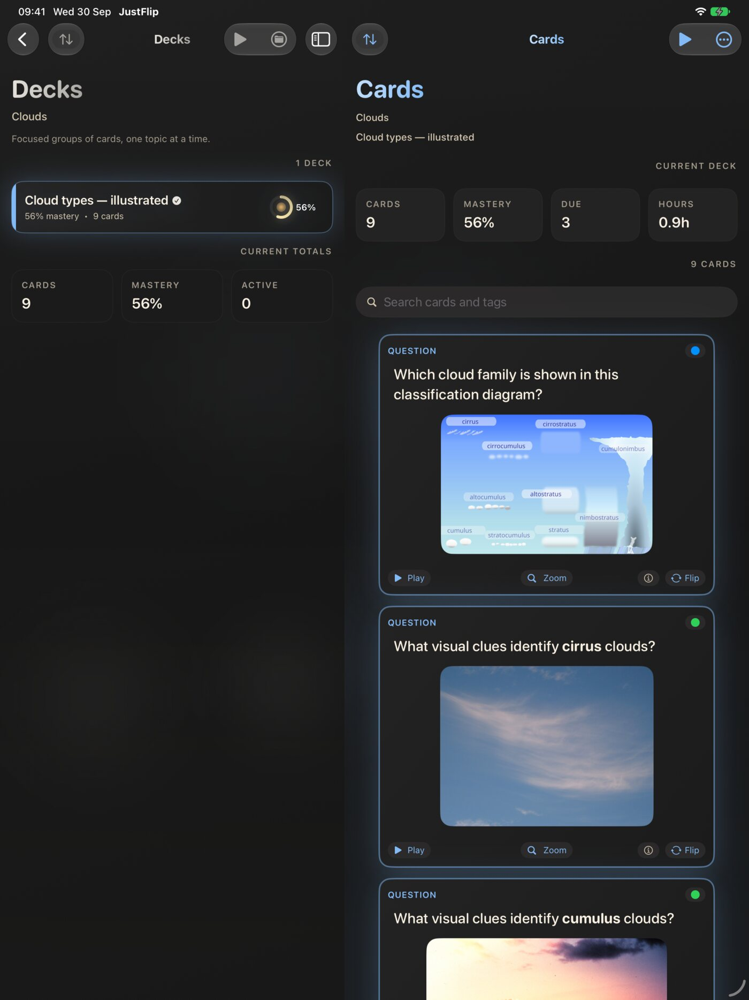
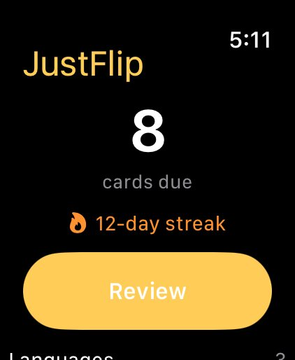
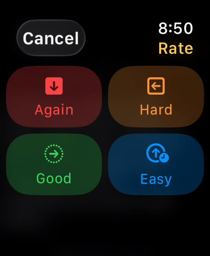
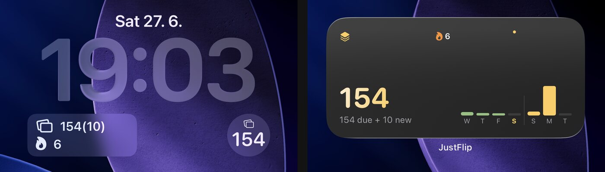

8.1 iPad
On iPad, JustFlip! uses a two-column layout, like the Settings app. The sidebar on the left holds your Interests and, once you pick one, that interest’s Decks. The detail column on the right shows the cards of the deck you selected. You browse on the left and study on the right, without losing your place.

The layout follows the way you hold the iPad:
- With room to spare (landscape, or a large iPad in portrait), both columns sit side by side.
- When space is tight (a smaller iPad in portrait, or JustFlip! next to another app), the cards get the whole screen. The sidebar slides in when you tap the sidebar button in the top corner or swipe in from the left edge.
JustFlip! also works in Split View and Slide Over next to another app, and the columns adjust to the space they get. It runs in a single window, so you can’t open two JustFlip! windows side by side.
8.1.1 Drag and drop
Drag and drop works in two ways:
- Import a file by dropping it. Drag a
.flashcardsor.flashcards.zipfile, a CSV spreadsheet or an Anki.apkgpackage from the Files app (or from another app in Split View) onto JustFlip!. You can drop it anywhere in the window, and the import starts as if you had opened the file. Chapter 5 explains what each format brings in. - Reorder your library. Interests, decks and cards can all be rearranged by dragging. For interests, choose Reorder from the menu at the top of the Interests screen. For decks and cards, choose Edit from the list’s menu. Then drag the rows by their handles and tap Done when you’re finished.
With a trackpad or mouse, the grade buttons lift when you hover over them. With a hardware keyboard, the review shortcuts in the keyboard reference work on iPad exactly as they do on the Mac.
8.2 Mac
On the Mac, JustFlip! uses the full width of a desktop window with three columns: Interests, Decks and Cards. Make the window narrower and the Interests column tucks away behind the sidebar button, so the decks and cards keep enough room. In a very narrow window only the cards stay on screen. Widen the window again and all three columns come back.
8.2.1 The menu bar
JustFlip! adds its own commands to the top of the File menu:
| Command | Shortcut | What it does |
|---|---|---|
| Import Cards… | ⇧⌘I | Opens a file picker for any importable file |
| Import Interest Archive… | — | The same file picker, under the name you might look for |
| Export Interest… | ⇧⌘E | Exports the selected interest as an archive |
| Export Statistics… | — | Exports the selected interest’s statistics |
Both import commands open the same picker. JustFlip! works out the format from the file itself, so it doesn’t matter which one you choose. The rest of the menu bar (About, Hide, Quit, Edit, Window, Help) is the standard Mac menu bar.
Export Interest… and Export Statistics… act on the interest that is selected in the sidebar. If no interest is selected, they do nothing at all: no error, no dialog. Click an interest first, then choose the command.
For now, the four File-menu commands above are in English whatever language the app is set to. Everything else in JustFlip! follows your language.
A few things work differently from other Mac apps:
- There is no ⌘, for Settings. Open Settings from the gear button at the top of the Interests column, then choose Settings.
- There is no ⌘F. To search all your cards, use the magnifying glass button at the top of the Interests column.
- No key starts a review. Click a review button to begin, then use the keyboard for the rest.
Drag and drop from Finder works as it does on iPad: drop a deck file anywhere in the window to import it.
8.3 Keyboard shortcuts
The review shortcuts work on the Mac and on an iPad with a hardware keyboard. They are built for one hand: flip with the Space bar, grade with the number keys, and never reach for the pointer.
| Key | Action | Where it works |
|---|---|---|
| Space | Flip the card | During a review |
| Space | Reveal the hidden region | During an image occlusion review |
| 1 | Grade Again | During a review |
| 2 | Grade Hard | During a review |
| 3 | Grade Good | During a review |
| 4 | Grade Easy | During a review |
| Return | Check your typed answer | During a review with Type Answers on |
| ⇧⌘I | Import Cards… | Mac, anywhere (File menu) |
| ⇧⌘E | Export Interest… | Mac, with an interest selected (File menu) |
The number keys are plain digits, not ⌘-digits. That keeps grading to a single key press.
Each of these is intentional, and each one looks like a bug when you don’t know about it:
- You’re typing an answer. While the Type your answer field has focus, Space and 1–4 type characters instead. Otherwise typing “3” would grade the card Good. Return still checks the answer.
- You turned on Stricter grading. With Settings › Behavior › Stricter grading on, flipping the card removes the Good and Easy buttons, and keys 3 and 4 go with them. It is off by default.
- The occlusion answer is still hidden. On an image occlusion card the grade keys only work after you have revealed the answer with Space.
8.4 Apple Watch
The watch app is a small, focused companion. It shows how many cards are due and lets you review them from your wrist. You’ll find it handy in a queue, on a walk, or anywhere you can’t take out your phone.

The watch’s Today screen shows:
- the number of cards due,
- your streak, when you have one,
- the Review button,
- up to four of your interests, each with its due count.
The first time you open it, the watch has nothing to show yet. It asks you to Open JustFlip on your iPhone to sync your cards. Open the iPhone app once, and the watch fills in.
8.4.1 Reviewing on the wrist
- Tap Review.
- Read the question. Tap the card, or Show answer, to flip it.
- Press and hold the card to rate it. The four grades appear as a grid, with the same colours and symbols as on your iPhone: Again, Hard, Good and Easy. Pick one, and the next card follows on its own.
- When the queue is done, the watch says Nice work and tells you how many cards you reviewed.
Why press and hold instead of four buttons? The watch screen is small. Four buttons would push the answer, the very thing you’re judging, off the screen. Holding the card keeps the whole display for the card itself. The first card of your first session explains the gesture once, and a small Hold to rate hint stays under the card after that. You can rate a card from the question side too, when you know it at a glance.

8.4.2 What the watch shows
The iPhone prepares each card for the watch, so it looks the way it does on the phone: bold, italic and code, formulas, photos and diagrams, shrunk to fit your wrist.
- Cloze cards work. The blanks show as […], or as the hint if you gave one. The back shows the sentence with the blanks filled in, plus any notes from the answer side.
- Flags show as a soft colour behind the deck name at the top of the card. You can see them on the watch, but you set them on the iPhone.
- Code and tables appear in a plain monospaced font, without syntax colours.
8.4.3 What the watch leaves on your iPhone
Some cards don’t fit on a wrist, so JustFlip! doesn’t send them to the watch at all. That’s better than showing a card without the part it tests. These cards stay on your iPhone:
- cards with audio or a PDF on either side,
- progress trackers, which you grade on a slider, not with four buttons,
- cards with more than 280 characters on either side,
- cards whose photo or diagram is too big to send, or too detailed to read at wrist size.
The watch also carries at most 60 cards at a time. Whenever cards stay behind, the Today screen says so, for example “12 cards need your iPhone”. If none of your due cards can be reviewed on the watch, you’ll see Review on your iPhone where the Review button would be.
8.4.4 Your iPhone keeps the schedule
The watch doesn’t schedule anything itself. Your iPhone is the only device that decides when each card comes back. The watch keeps a copy of the cards your iPhone last sent and a list of the grades you’ve given. It sends those grades back to your iPhone, which updates the schedule. Your iPhone then syncs with iCloud, so your other devices catch up.
In everyday use, you won’t notice any of this: with your iPhone nearby, a grade reaches it within seconds. You’ll notice it when the two are apart.
Review on the watch with your iPhone out of reach, and the grades wait on the watch. The Today screen shows them, for example “3 syncing to iPhone”, until your iPhone receives them. Nothing is lost. Grades are delivered when the two reconnect, and each is applied only once.
Until then, the iPhone, the widget and your other devices still show those cards as due. The next interval also counts from the moment your iPhone receives the grade, not from when you gave it. After a long review away from your phone, some cards may come back a few hours later than usual.
The watch app has a dark design only, like most watch apps.
8.5 The home-screen widget
The Cards Due widget shows what’s waiting for you without opening the app. Tap it and JustFlip! opens straight into today’s review.

It comes in three Home Screen sizes and three Lock Screen sizes:
| Size | Shows |
|---|---|
| Small | The number of cards due, your streak, and the last seven days of reviews as small green bars |
| Medium | The same count, the due-and-new split, and a timeline: recent days in green, upcoming days in gold |
| Large | Everything above, your best streak, and a fuller two-week timeline |
| Lock Screen, circular | The number of cards due, or a checkmark |
| Lock Screen, rectangular | Due and new cards, and your streak |
| Lock Screen, inline | A one-line summary next to the clock |
When there’s nothing left to do, the widget says All caught up, and it tells you when the next cards are due, for example “Next tomorrow · 12”.
To add it:
- Touch and hold an empty spot on your Home Screen until the apps jiggle.
- Tap Edit, then Add Widget.
- Search for JustFlip, choose Cards Due, swipe to the size you want, and tap Add Widget.
For the Lock Screen, touch and hold the Lock Screen, tap Customise, choose the Lock Screen, and add Cards Due from the widget list.
The widget doesn’t read your library directly. It shows a summary that the app saves on this device whenever you open it, leave it or finish a review. The widget updates itself at midnight and when the next cards come due. But if you review on your iPad or Mac, the iPhone widget catches up only after you next open JustFlip! on the iPhone.
The widget is for iPhone and iPad. It uses the JustFlip! gold whatever theme you’ve chosen in the app, and follows your device’s light or dark setting.
8.6 Siri and Shortcuts
JustFlip! gives Siri and the Shortcuts app two actions. You don’t need to set anything up: they’re available as soon as you’ve opened the app once.
| Action | What happens | Opens the app? |
|---|---|---|
| How Many Cards Are Due | Siri tells you how many cards are due and how many new cards are ready | No |
| Start Review | JustFlip! opens and starts today’s review | Yes |
In English, you can say:
- “How many cards are due in JustFlip?”
- “What’s due in JustFlip?”
- “Cards due in JustFlip”
- “Start a review in JustFlip”
- “Review my cards in JustFlip”
- “Study with JustFlip”
A typical answer is “You have 14 cards due for review.” or “Nothing is due, but 5 new cards are ready.” When everything is done, Siri tells you you’re all caught up.
Both actions also appear in the Shortcuts app. Search for JustFlip there to add one to a shortcut of your own, or to put it on your Home Screen.
The spoken phrases work in English, German, Spanish, French, Italian, Japanese, Korean and Brazilian Portuguese. Siri doesn’t support Czech, so Czech has no phrases. On a Czech device you can still run both actions from the Shortcuts app, and the answer is in Czech.
“How Many Cards Are Due” answers instantly, without opening the app. It reads the same saved summary as the widget, so the same rule applies: it knows what this device knew the last time you used JustFlip! here.
8.7 Spotlight
JustFlip! adds your cards to Spotlight, the search on your device. Swipe down on the Home Screen, type a few letters of a question, and the card appears under JustFlip!. Tap it, and JustFlip! opens that card’s deck, scrolls to the card and highlights it for a moment with a ring.
Spotlight looks at:
- the card’s question and answer,
- its tags,
- the deck and interest names.
A picture-only card, with no text, is found by its image description. That’s one more reason to write one (Chapter 11).
Spotlight looks for words that begin with what you type. “photo” finds “photosynthesis”, but “synthesis” doesn’t. It ignores letter case and accents, but not typos. To find a word in the middle of another, use the search inside the app instead: the magnifying glass on the Interests screen, Search Cards, finds text anywhere.
8.7.1 Keeping decks out of search
Everything is searchable to start with. To keep an interest or a deck out of Spotlight, turn off Include in device search:
- For an interest: touch and hold the interest (or right-click on the Mac), choose Edit Interest, and turn off the switch. Every deck in that interest disappears from search.
- For a single deck: touch and hold the deck, choose Edit Deck, and turn off the switch. The other decks in that interest stay searchable.
The same switch appears when you create an interest or a deck, and when an import creates a new interest. When you import into an interest you already have, the new cards follow that interest’s setting.
A card appears in Spotlight only if both its interest and its deck are included. Turn off the interest, and none of its decks appear, whatever their own switches say. There’s no per-card switch. To keep a few cards private, move them into a deck of their own and switch that deck off.
The index stays on this device. Nothing leaves it, and the switch isn’t included when you export or share a deck: whoever receives the deck decides for themselves.
8.8 What’s new
After an update that brings new features, a gold What’s new button appears in the bottom corner of the main screen. It stays for about five seconds (fifteen with VoiceOver, which also announces it), then fades away. Tap it to open the What’s new sheet, which lists what changed in each release.
You see the button once per feature release, whether you tap it or not. Bug-fix updates don’t show it, and neither does a fresh install. You haven’t missed anything yet.
Missed it? The sheet is always a tap away: tap the gear button at the top of the Interests screen and choose What’s new.
The sheet loads the News page from just-flip.app, in your app’s language, so it needs an internet connection. Offline, it says Couldn’t load the news and offers Try again and Open in Browser. You can also read the same page any time at https://just-flip.app/news/.